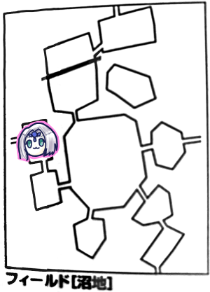

最近リプレイ作成作業が捗っていますよ！
そしてこのエターナルセッションが始まって初めての同月2回目のセッションです！
正直この時点でリプレイ溜まっててｳﾞｧｰってなってましたｗ
さて、前回は魔動機文明の遺跡の最深部に辿り着いたところで次回へ続くになっておりました。
守りの剣を得るための試練でVSキマイラでしたね。
我々の方がそこそこレベルが高いため「なにこのキマイラ可愛い」ってなってました。
みぞれ「そいじゃキマイラに向かってグレネード撃ちまーす。まじかよファンブル」
「開幕から飛ばすねみぞれちゃん」
みぞれ「ぐぬぬ…じゃグレラン撃ります。13」
「あれ？グレランマギテじゃなくてライダー技能でしょ」
みぞれ「あっしまった、振りなおします、16、やった上がった」
GM「全員抵抗しました」
みぞれ「むぅ…14点ダメージ、半減で7…こいつ魔法弱点だよね？」
GM「はい。弱点は半減してから乗せます」
みぞれ「じゃいつものように3m下が…いやピーターと一緒に魔法に巻き込まれない位置にいたいなこれ。5m離れた位置にいれば半径5mで巻き込まれなかった気がする」
「途中で簡易ルールにしたからどのエリアにいるかどうかで判定するよ、だから3m移動とかいらない」
みぞれ「あっれー？こないだ3m下がりそこねて攻撃された記憶あるんだけど、いつからそうなったんだっけ？」
「ウォール問題で簡易に切り替えたはず」
リプレイに書いた記憶ないんですよねこれ…
ピーター「ファイアブラスト撃ちます、23」
GM「山羊頭がファンブルしました。全員失敗」
ピーター「ダメージ15点です」
ナナシ「お、翼死んだよー」
ピーター「ナナシどれ殴りにいく？」
ナナシ「山羊かなー」
ピーター「じゃパラミスを山羊に撃ちます」
タッシュ「ファイアーボール放り込みます。19」
GM「山羊と蛇が抵抗、ライオンと竜が通ったよ」
タッシュ「15点です」
みぞれ「山羊抵抗してなければ落ちてたなー、てかグレネード成功してればなー」
ナナシ「山羊落としに行きます。キャッツアイ使います。ファストアクションでウィップ使って挑発攻撃。21」
GM「18回避失敗」
下記どどんとふの入力
>ナナシ：2D6+11+1+0+0 ウィップ, 挑発攻撃Ⅱ: 怯えろ！竦め！MSの性能を活かせぬまま死んでゆけ！
みぞれ「がんだむｗｗｗ」
ナナシ「14点ダメージ」
みぞれ「いちたりない」
ナナシ「タッシュ先生あと1ポイント稼いでよー。ファストアクションこいつに使うしかないよな、山羊さんに。20」
GM「13、ダメでした、ファンブルじゃなければ大丈夫」
みぞれ「フラグ立てないで」
ナナシ「13、せーふせーふ」
GM「はい山羊頭吹っ飛びました」
ブルーローズ「攻撃しまーす。全乗せする？」
ナナシ「いいよ、キャッツアイだけで」
ブルーローズ「魔力撃キャッツアイでシンバを殴る。18」
GM「回避するよー17」
ブルーローズ「当たりましたわ！」
ナナシ「きゃっつあーい」
ブルーローズ「25点ダメージ！」
GM「ギリ残った」
ナナシ「マッスルベア欲しかったな」
ブルーローズ「追加攻撃します！18」
GM「13」
ナナシ「ファンブルしなければ」
みぞれ「だからやめて」
ブルーローズ「26点！」
GM「獅子頭倒れました」
ブルーローズ「そう言えばナナシ、ブラッドやるの忘れてない？」
ナナシ「ストロングブラッド？竜の炎後衛にも飛んでくからいいかなって」
みぞれ「炎、射程50mかー」
GM「竜頭攻撃行きます、大きく息を吸ってー」
ナナシ「吐いてー」
GM「ピーターを焼きます」
ブルーローズ「お、焼き兎」
GM「18、生命抵抗でお願いします」
ピーター「生命抵抗なんだ、15、失敗」
GM「あ低い、14点ダメージ」
GM「蛇はブルーローズに攻撃、19」
ブルーローズ「これ普通に回避？」
ナナシ「回避の後に生命抵抗」
ブルーローズ「16、失敗」
GM「14点ダメージ、追加で呪いの毒が17、生命抵抗してください」
ブルーローズ「18、抵抗」
ナナシ「あーキマイラ死んだな」
ブルーローズ「竜を殴ります」
ピーター「殴る前にパラミスを竜と蛇の2体に撃ちたい。主行動で」
ナナシ「ドラゴンだけでいいんじゃない」
ピーター「じゃそうする。あっ主行動でパラミスするの久しぶりで魔力レベルが分からない！えーとアルケミストは7か、ころころ、20」
GM「15、失敗」
ピーター「じゃ続いてヴォーパルウェポンを…あっごめんなさい同一対象にはできなかったんだった」
ナナシ「タッシュ先生ファナティをブルーローズに」
タッシュ「じゃあ要請通りファナティをブルーローズに」
ブルーローズ「MP無尽蔵だからな」
タッシュ「うーん、まあな、はいかかりました」
ナナシ「先に動いておこうか？絡んでおこうか？」
ブルーローズ「大丈夫？フラグ構築してない？」
ナナシ「最高の一撃を決めてもらうために絡んでおこう。そういえば部位への絡みってどういう扱いになるの？」
GM「うーん？どうなんだろう？」
調べたけど頭だと効果がなんか意味ないとかでナナシは待機。
ブルーローズ「トンファー魔力撃キャッツアイで殴ります！19」
GM「19回避！」
ナナシ「パラミス入ってないよ」
GM「あーーー」
ブルーローズ「26点ダメージです！ドラゴン撃破！」
GM「頭が3つとも潰れたのでコア部位破壊でキマイラは倒れました」
GM「キマイラの身体から守りの剣が出てきました」
みぞれ「これ自動入手？」
GM「宣言があれば」
タッシュ「そう、誰も剣を手に入れると宣言していないのである！」
ピーター「剥ぎ取りって部位ごとじゃないですよね」
タッシュ「部位ごとだったらやばいよこいつ自動で500ガメル手に入るし」
5部位で2500ガメル！お得！
GM「ボスを倒しました。守りの剣のシナリオでは自動で村に戻ることができます。どうしますか」
「戻りましょう！」
GM「では清算します。☆が10個、経験点が3480点。ファンブルがある人は+10点です」
みぞれ「はっはっは…ちゅらい」
GM「報酬は1人4000ガメル手に入ります。あと『セズウィックの盾』の称号を手に入れます。通常称号は名誉点を支払って手に入れるのですが、これはシナリオで取得したものになります。20名誉点分になります。あと村が発展します。最大防衛点を+20してください」
ピーター「今19だから…39になります」
GM「それじゃ各自成長しておいてください」
タッシュ「今何が買えますか」
GM「目抜き通りがあるので武器防具以外は何でも買えます。今、村の発展レベルいくつだっけ？」
ピーター「4です」
GM「なら武器防具はSランクまでなら買える。但し魔法の品を除く」
休憩に入って各自成長を実施しました。
ただいまのセズウィックステータス：
商業15
名声36
総合値51
みぞれ「総合値って商業と名声足したやつだよね」
ピーター「足したやつです。ようやくハロルドの店が建つ」
GM「じゃハロルドの店を設置してください」
ピーター「どこでもいいんですか、じゃ私塾の隣に建てておきます。今建設ポイント12でーす」
GM「総合値が80を超えると村の発展レベルが5になります」
みぞれ「名声上がりそうだけどね、守りの剣」
GM「上がるのは防衛値なんだなー」
みぞれ「というわけで守りの剣を持って帰りました。どこかに設置するんですか？」
ローレンス「よくぞ守りの剣を持ち帰ってくれた。これで村の防衛も進む。しかしこの剣は空っぽなので、剣のかけらを入手するクエストをお願いしたい。とりあえず10個必要だ」
タッシュ「余裕」
ピーター「今こそ大放出する時」
みぞれ「これ小出しにするの？」
タッシュ「一気に渡したら計上されないシステムだったらやばい」
ブルーローズ「そんなことあるの？」
タッシュ「ゲームによってはあり得る」
GM「10個渡すのが1クエストになります」
みぞれ「なるほど、これ何度でも受けられるクエストってことか」
ブルーローズ「じゃ献上しましょう」
ナナシ「じゃ71個あるから70個」
GM「7回クエストをこなしたことになるので☆が7つで1400経験点、報酬は17000ガメル、防衛点が7点上昇しました。これはクエストなのでまだ経験点は手に入らないことに注意してください」
ピーター「防衛46になりました」
みぞれ「LV10モンスター4匹瞬殺できるよ」
ブルーローズ「すごっ」
ローレンス「では村を守るバリアを張ります。そして剣のかけらを突っ込んだので70d振ってください
「やべぇ」
「253です」
「やべぇ」
GM「名誉点が一定値を超えたので街で新規クエストが発生します」
「街行く用事なんかあったっけ？」
「拾った帽子届けるのなかったっけ」
「前やらなかったっけ？」
「2個目を拾ってる」
「よく帽子落ちてるなぁ」
GM「楽譜何持ってる？」
みぞれ「(メモ見ながら)エッダって持ってたっけ？」
ブルーローズ「持ってる」
みぞれ「どこで手に入れたんだっけ…で、楽譜がどうしたんですか？」
GM「こないだ沼地のこの辺りに遺跡があるって検討つけたよね」
みぞれ「つまりミッションとしてそれも受けられますよってことか」
GM「楽譜探すのも遺跡探すのもミッションです、これはプレイヤーが自ら動かないといけないやつですね」
ちなみに後で調べたらポイズンモールドから入手してました、エッダの楽譜。
みぞれ「ハロルドの店建ったんだよね？行きましょ。いやー大変でしたよー商業値15にするのー」
ハロルド「いやー防衛壁が日に日に高くなってくの見てました。で、どういったご用件で？最初のお客様になってくれるんですか？」
みぞれ「お、なんかいいもの売ってます？」
売り物：
・特製ヒーリングポーション120G
・特製トリートポーション600G：2d6を2回振ってよい方を取れる
・特製アウェークンポーション800G：リザレク効果
・特製魔香水1000G：MPを15点回復
みぞれ「とりあえず適当に買っとくか。あ、そう言えば楽譜は」
GM「ハロルドのミッションを3回こなしたら格安で楽譜をお譲りします」
みぞれ「う゛ぁーーきたーーー」
ハロルド「受けてくださるんですか、ありがとうございます！」
タッシュ「受けざるを得ない」
ハロルド「注文された薬草を届けるだけです」
GM「ではお客さんを決めてください、1d6です」
ナナシ「5」
GM「あ」
タッシュ「まさか新天地？」
GM「沼地に薬草を届けてください」
「今の『あ』はなんだ」
GM「それじゃ沼地へ出発ですね。準備はOKですか？」
ナナシ「保存食80個あります」
みぞれ「消費期限大丈夫なのそれ」
GM「そういう恐ろしいゲームもありますがSWは大丈夫です」
GM「じゃどうやっていきます？右側のエリアが空いてますが」
タッシュ「こないだそこ埋まらなかったっけ？」
GM「ピーターそこ埋まってる？」
ピーター「右側は台地ですね」
みぞれ「パス。山岳周りで」

GM「ブルーローズさん主移動お願いします」
ブルーローズ「いやーーー」
みぞれ「あれここだっけラプテラス」
GM「そうです」
ナナシ「そう言えば石化解除手段を手に入れたのでコカトリスへの挑戦権を得ましたよ」
みぞれ「なんだっけ」
ナナシ「ブルーローズのプリースト」
ブルーローズ「コカトリスよりラプテラスの方が弱いのか」
みぞれ「コカトリスって討伐ミッション出てない？主討伐ミッション発生はレベル依存なの？」
GM「商業、名声、名誉点、レベルで討伐ミッションが発生します。ミッション出てこないなと思ったらこれらを上げてください」
ブルーローズ「主振りましたよ、3」
GM「じゃイベント表もお願いします」
ブルーローズ「3」
GM「猟師イベントです、1d6をどうぞ」
ブルーローズ「6、あっ」
ナナシ「タッシュ！タッシュ！タッシュ！
GM「足元に惨たらしい猟師の亡骸があります」
みぞれ「6出したことなかったよね、我々これ誤射イベントだと思ってるから」
GM「更に1d6どうぞ」
ブルーローズ「6」
みぞれ「探索だったら遺跡見つかったのに」
GM「猟師は家族の写真を入れたロケットを持っています。この猟師は街の出身です」
みぞれ「猟師村の人じゃないんだ、街へ行く用事が増えたな」
ブルーローズ「この死体どれぐらい時間が経ってますか？リザレクションできないかな…あっ一般人は穢れ嫌うんでしたっけ」
みぞれ「本人が拒否れば生き返らないんですよね確か」
探索でレミングの歯が出ました。よく出る。
ブルーローズ「そろそろ1体のレミングになるんじゃないの」
「クリエイトレミング」

タッシュ「イベント4です」
GM「探索イベントです」
タッシュ「1」
GM「山の方から土煙をたてて無数の石が降ってきます。11を目標に回避してください」
ピーターだけ避けられませんでした。
ピーター「キュアハートください」

GM「朝9時ぐらいですね。針葉樹の森です。ピーターイベントどうぞ」
ピーター「5」
GM「1d6どうぞー」
ピーター「6」
GM「ころころ。今16が出ました。ここには毒草があります。危険感知判定をしてください」
ブルーローズ、みぞれ、タッシュが失敗。しかしタッシュは毒無効。
GM「鉱石でないお2人はHPを1点減少してください」
ブルーローズ「痛い」
みぞれ「それだけですか？継続ダメージですか？」
GM「おっ知りたい？」
みぞれ「はい」
GM「じゃセージ技能で調べてください」
みぞれ「うさちゃーん」
ブルーローズ「うさちゃーんこれいたかったんだけどなんだかわかる？」
ピーター「成功」
GM「これはやばい毒です。毒分類78番、白い悪魔と呼ばれる毒です。これは刺されたら生命抵抗なしにいきなり毒にかかります。血が固まりにくくなります。ゲーム的にはダメージ受けるごとに2点の余計なダメージがはいります。3日放置すれば解毒されます。今すぐ解除したい場合はキュアポイズンで」
ブルーローズ「お客様の中に神官の方は」
「お前だお前」
GM「目標値は15です」
ブルーローズ「17！あ、今MP減らしてないしキュアポイズン使うとも言ってないわ」
GM「自分から言えるの素晴らしいです。やりなおし」
ブルーローズ「じゃみぞれちゃんにキュアポイズン。16、成功です！」
みぞれ「しゅわわーん」
ブルーローズ「自分にキュアポイズン。13。あれぇ？もっかいします。18、成功。あとビビッド歌います」
ナナシ「エリア移動するから回復するよ」
ブルーローズ「お前賢いな」
ナナシ「探索します。遺跡見つけた」
タッシュ「うそやろ」
東へ移動、沼地へ

GM「ジェネラルの移動をお願いします」
ブルーローズ「これはタッシュ先生でしょう」
GM「じゃおねがい」
ナナシ「今日も元気に警備中」
タッシュ「4」
GM「わかりました。じゃイベントをみぞれお願いします」
みぞれ「5」
GM「沼地イベントです」
みぞれ「2」
GM「沼から時折謎のガスが噴き出しています。火がついているもの持ってる人いますか？」
タッシュ「火口箱は大丈夫なのかな」
GM「火種を持ち歩くのは別のゲームなので大丈夫です」
みぞれ「魔動バイク大丈夫なのかな」
タッシュ「内燃機関ってことで」
ブルーローズ「魔動バイクが引火するならルンフォも引火するんじゃない？」
みぞれ「ドマさんとこ行くのは自由行動に含みますか？」
GM「含みます」
タッシュ「じゃあ行こうか」
みぞれ「ななっしーだけ探索してもらえば？」
ナナシ「じゃ探索します、失敗」
みぞれ「じゃ私も探索します、失敗」
ここでリアル来客があったので急遽席外してたけどドマさんに薬草渡してクリアしてたらしいです。
GM「このミッションは達成時に村に直帰できます。今回はフィールド移動でワープできます」
みぞれ「移動しなきゃいけないの？」
GM「今回みたいなタイプだとフィールド移動が条件になります。つまりエリアは移動しなきゃいけないわけですね」
さっさとエリア移動して帰還しました。
ハロルド「おっ早かったね」
GM「到達で☆1つ、配達完了で☆1つ、沼地は2日以内にお届けしたのでボーナス☆1個、合計☆3つ取得です。前回と合わせて☆10個、2000の経験点になります。
ミッション経験点は2400点、一人当たり2100Gでーす。あと商業値+3、交易宿効果で商業と名声それぞれ+1です」
ピーター「商業19、名声37、総合56になりました」
成長処理します。
ナナシ「レベル8にしていい？」
なりました。
GM「冒険達成度が16から18になりました」
最大は100らしいです。先は長いですね…
ハロルドミッション2回目。
GM「お届け先を決めてください」
タッシュ「2」
GM「騎士団本部のティエリアさんです。」
みぞれ「ちょうどいいじゃん帽子とロケット」
ブルーローズ「ご遺族に渡さないと」

GM「食料人数分減らしてくださいね」
タッシュ「わたし食べないよ」
ブルーローズ「ななっしー2人分食べるなよー」
GM「荒地イベント振ってください」
ナナシ「6」
GM「はい1d6振ってください」
ナナシ「5」
GM「敵を紹介します。3m級はある身体が石でできた怪物。コンジャラーがいるのでわかり切っているのですがロックゴーレムです。それが2体。鋭利な爪を持つ真っ黒い亀のような生物が1体」
ピーター「魔物知識判定しまーす」
GM「ロックゴーレム弱点抜きました」
ブルーローズ「弱点純エネルギーってなに？フォースとか？」
「我々にはまだ早いやつです」
GM「亀は魔人です。ダルグブーリーです。弱点は抜いてません」
ナナシ「先制取ったー」
みぞれ「じゃグレネードぶっぱします。21」
タッシュ「やる気」
GM「ロックゴーレム1の左だけ抵抗」
みぞれ「28！回った！」
GM「ロックゴーレムは魔法クリティカル受けないので20ダメージですね」
みぞれ「せっかく回ったのにー」
ピーター「じゃファイアブラスト撃ちます。23」
GM「むり」
ピーター「21、回った！」
GM「ゴーレム19点ですね」
ナナシ「あダルグブーリーしんだ」
タッシュ「ファイアーボール撃ちます。後ろから効率的にいきます」
ナナシ「効率的とは」
タッシュ「19」
GM「ロックゴーレム1抵抗、2はどっちも失敗」
タッシュ「17ダメージ」
GM「ロックゴーレム1の左だけ生き残ってます」
ブルーローズ「キャッツアイ入れるからMP減らしてー」
ナナシ「キャッツアイいらないよ」
ブルーローズ「じゃトンファー魔力撃のみで。15」
GM「14」
ナナシ「オレ、ヨケラレ、ナイ」
ブルーローズ「25！」
みぞれ「2ゾロでこのダメージつよすぎる、内訳どうなってんの」
タッシュ「固定値だけで27まで持っていけるのこれ？あたまおかしい」
ブルーローズ「追加攻撃します」
ナナシ「え？もう誰もいないよ？」
ブルーローズ「え？」
ナナシ「俺何もしてないし」
みぞれ「さっきGMがロックゴーレム1の左しか残ってないよって2回言ったよ」
タッシュ「大事なことなので」
ピーター「剥ぎ取ります。おっミスリル」
みぞれ「探索しまーす。成功、結果は1ゾロです」
タッシュ「うわぁ…」
GM「あ、主振ってもらえる？」
ブルーローズ「4です」

ブルーローズ「ここ知ってる、盗賊みたいな人たちが出るところだ」
GM「イベントお願いします」
ブルーローズ「6。ちょっとさっき殴り足りなかったみたいですね。誰だよ今日中に3件お届けできるかもとか言ってたの」
GM「敵振ってください」
ブルーローズ「4」
GM「牛ぐらいの大きさの4本脚の獣です。肉体は腐敗と再生を繰り返しています。これが1体。もう1体が全身が10mほどある蛇です。鱗が全身を覆っています」
ピーター「魔物知識判定します。牛はクリティカルしました」
GM[蛇はインシルペルスです。弱点抜きました。牛はテラービーストです」
みぞれ「蛇の炎無効、頭射撃回避+4とか天敵なんですが」
ナナシ「先制判定します。ケンタウロスレッグ使います。23、ふ、使うまでもなかった」
GM「敢えての配置、テラービーストを前後に配置します。蛇は前」
みぞれ「いやらしい」
タッシュ「毒の範囲魔法使います、18」
GM「13失敗」
ナナシ「これテラービーストを目視したものは1ラウンドの間恐怖で全ての行動判定に-2ペナルティって精神抵抗いつするの？」
GM「行使判定前ですね」
タッシュ「じゃ行使判定します…あ、これ貫通だった」
みぞれ「毒で貫通ってどういう」
GM「毒吹いてるんじゃない」
みぞれ「毒霧」
タッシュ「対象選択しなきゃいけないんだこれ」
GM「部位も選択しないといけないね。選んだやつ以外は1/2の確率で当たる。行使判定からやり直そう」
タッシュ「頭狙って、改めまして。20」
GM「先に誰が巻き込まれるかを判定します。1～3が出たら巻き込まれます。胴体1、テラービースト1と2なので全員入りました。では抵抗します。頭抵抗成功。胴体成功」
みぞれ「なんで5、6を2回連続で出せるのですか」
GM「テラービースト2匹とも失敗」
タッシュ「15点ダメージです」
ピーター「いつものようにファイアブラスト打ち込みます」
みぞれ「炎無効だよ、だから私グレネード撃てないの」
ピーター「あそっか、そしたらウィンドカッター撃ちます」
牛が前後、蛇が前にいると思いきや、GMの意図的に蛇が前牛2匹が後ろらしいということが判明しました。前後言うたやんｗ
タッシュ「結果的に毒が射撃でよかった」
ピーター「数拡大4倍で全員に撃ちます。18」
GM「蛇頭失敗、蛇胴体抵抗、テラービースト1失敗、2成功」
ピーター「2回転しました、28ダメージ」
GM「ちょい待てい」
ピーター「副行動で頭にパラミスかけときます」
ナナシ「でもこれ最悪ブルーローズのフォースでいける」
ブルーローズ「フォース射撃なので」
みぞれ「射撃なの」
ナナシ「フォースやっちゃえば」
ブルーローズ「じゃスフィンクスナレッジ入れてやろうか。神官ぽいことしますよ！フォース！22！」
GM「16」
ブルーローズ「裁きを！15点ダメージ！」
GM「あっ牛精神抵抗判定してなかったな」
ブルーローズ「蛇がでかくて見えなかったなー」
みぞれ「制限移動だとグレネード撃てないのかー、じゃタゲサソリバレでHP低い方の牛を攻撃、18」
GM「19」
みぞれ「なーーー」
ナナシ「牛いきます」
GM「じゃ精神抵抗してね、18」
ナナシ「25抵抗」
みぞれ「そういや私も精神抵抗してないよね」
GM「しゃーない」
ナナシ「18」
GM「20」
ナナシ「あれ、じゃ削れた方を挑発攻撃で。24」
GM「15、絡まった」
ナナシ「部位は5」
GM「胴体」
ナナシ「いいとこ絡まったね、16点ダメージ、撃破」
GM「1つルール無視してましたけど巻き戻しません。牛、毒無効でした」
「腐敗と再生だもんなぁ、そりゃこいつ毒効かないわな」
GM「さーどうしようかな、変わったことしようかな」
ナナシ「いきなり後衛に移動する」
ピーター「なんでうさぎをいじめるの」
GM「キュアウーンズを自分に使用します」
ブルーローズ「こいつ神官か、仲間か」
GM「発動成功、7点回復しました。マルチアクションでナナシを攻撃します。19」
ナナシ「24。14点ダメージ。回復分削った」
ナナシ「動いていいすか？」
ブルーローズ「やばい、ブルーローズ14mしか動けない。つまり後衛届かない」
タッシュ「まじか」
ナナシ「挑発攻撃。18」
GM「ファンブル。3は…ナナシ、ダメージに冒険者レベル足しといて」
ナナシ「じゃ23点」
GM「いってーなおい」
タッシュ「なんか必要な時に射程が足りないと困るので前にだけ出ておきます。敵から10mぐらいのところで」
ブルーローズ「制限移動でフォースとかどうよ」
ナナシ「それ俺誤射されるよ」
ブルーローズ「じゃ移動だけしときます」
GM「挑発攻撃をくらってるから、明日のためにキュアウーンズ。いや、射程に入ってくれたので数拡大でナナシ、ブルーローズ、タッシュにフォース。12」
ナナシ「20」
タッシュ「22」
ブルーローズ「ん？精神抵抗？19」
GM「9点。なので全員半減5点ずつくらってください。じゃ続きましてナナシを攻撃」
ナナシ「拡大数つかったのに？」
GM「あー宣言型か、じゃこれで終了です」
ブルーローズ「じゃ前に出ます」
ナナシ「ファナティかけてもらったら」
ブルーローズ「じゃそうする」
タッシュ「ファナティをブルーローズに。かかりました」
ブルーローズ「そしたら移動してキャッツアイマッスルベア、異貌化します」
GM「それでいいですか？じゃSAN値チェックお願いします、19」
ブルーローズ「16」
GM「1ラウンド行為判定-2ね」
ブルーローズ「ファナティ分削れたのね。20」
GM「これ敵が残ったら回避-4で回ってくるよ。19、あーおしい！」
ブルーローズ「そしたらー31ダメージ。追撃！20」
GM「21、回避」
ナナシ「サーベルで挑発攻撃します。22」
GM「13」
ナナシ「1ゾロ。でも挑発はかかってるしおっけー」
みぞれ「タゲサソリバレ、キャッツアイ入れて22」
GM「16」
みぞれ「うえーーーーー！？3回転した、25、オーバーキルがすぎる」
終了！
西へ移動します。

GM「ピーターイベントどうぞ」
ピーター「4」
みぞれ「そう何度も6が出てたまるか」
GM「もっかいお願いします」
ピーター「6」
GM「ノームが教えてくれます。ここのエリアで探索するといいのが手に入るよ。探索を1d6+6で振れる。」
ブルーローズ「ナナシさんお願いします」
ナナシ「成功、5だから11」
GM「剣のかけらを手に入れました」
みぞれ「ここ休憩できるよね」
GM「オアシスの休憩は1人50G、魔動バイクも駐車料金50G払ってください」
書いてなかったけど確か街が近いから素通りしたと思う。
そのまま西へ。

GM「じゃみぞれ振ってください」
ナナシ「やーしまったなみぞれの番だったら強行しなかったのに」
みぞれ「酷い言われようだわ、3」
GM「もっかいふって」
みぞれ「6、ここで出すか」
GM「主が移動します。ブルーローズどうぞ」
ブルーローズ「ふえ！？6」
GM「あああーーーーー(がっくり)」
タッシュ「GMのテンションが低空飛行」
みぞれ「ここの主遭遇は3だったはず」
GM「街に着いちゃいました。久しぶりのルキスラです」
ブルーローズ「そしたら騎士団本部行きましょう」
GM「騎士団に行きました。訓練してますね」
ブルーローズ「じゃ、責任者を出せと」
みぞれ「待って」
ブルーローズ「届け物を持ってきました」
GM「ほう、誰宛てだ」
全員「…………」
みぞれ「(プレイメモ見返して)てぃ、ティエリア！ティエリアさん！」
ブルーローズ「このパーティー知能低いよね」
GM「ここの騎士団は6番隊まであります。ティエリアさんは3番隊の隊長で、金髪碧眼の優しそうな人でした。受け取ってもらいました。ティエリアさんは君たちのことを知っていますよ。それだけの名声値があるんですね」
ブルーローズ「どうやらわたしたちも有名になったようですわね」
GM「粗末な武器を20本持ってきて欲しいそうですよ」
ナナシ「粗末な武器は0個だねー」
みぞれ「前回連れから買い取ってまでそろえた記憶がある」
ナナシ「粗末な武器ってこのレベル帯手に入るの？」
タッシュ「入らない可能性あるね」
GM「レベルを上げすぎちゃった系統のやつだね」
GM「あと、荒地の北側に蛮族が関所を作っています」
ブルーローズ「あそこジェネラルと通信したとこだよね」
ナナシ「お元気ですか」
ブルーローズ「石像を壊した件は全然怒っていません。特にタッシュ先生、お越しをお待ちしております」
タッシュ「それ絶対怒ってるわー」
あの関所って壊したよね、という話になり、クエスト達成となりました。(後々実は放置してなかったことが判明します)
報酬でパーティーに1000G入りました。
ブルーローズ「やりましたな。今パーティー財布どれぐらいあるの」
ナナシ「現金が1万、それ以外が6万」
「6万ｗｗｗｗｗ」
GM「関所を破壊したなら、続けて、台地にある砦も破壊して欲しいと言ってきます」
「そのうち行きますか」
ブルーローズ「じゃあ帽子とロケットを届けに行きますか」
GM「こっちは名前を言う必要はないので遺族に渡されます」
GM「マギテック協会でもクエストを受けられますよ。ローレンスに元協会の導師からの手紙を届けて返信を持ってきてクリアです。3回クリアで特殊イベントが発生します。双方で遺跡を探していて、情報交換で研究が進むんですね。あとはダンカン商会からの依頼で、ランダム宛先へのお届け物があります」
「受けてみよう」
GM「ランダム宛先はローレンス宛でした」
みぞれ「同時にできるやんけ」
GM「これも3回クエストがあります」
GM「ここでローレンスミッション完了で村にワープすることができます。これクエストとミッション一緒に受けると片道すっ飛ばせるんですよね」
「便利。戻りましょう」
GM「素早く帰ってきたのでハロルドミッションは☆5つ、遺失物お届け物で☆2こ、関所クエスト完了で☆2個、合計☆9個になります。全部で2280の経験点になります。では本日はこの辺で、成長処理。レベルアップは次回までにやっておいてくださいね！」